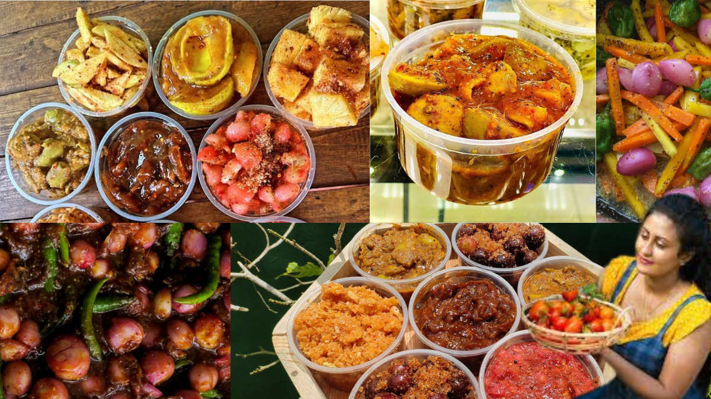

Fresh, Healthy & Sri - Lankan .
Spice Up Your Taste with Sinhala Homemade Achcharu(Pickle)!
ABOUT US
"We are passionate about bringing authentic Sinhala homemade achcharu to your table. Our recipes are crafted with love and expertise, using traditional methods passed down through generations. Each batch is a burst of Sri Lankan flavors, combining the freshest local ingredients to deliver a taste that's truly unforgettable. Discover the essence of Sinhala cuisine with every bite of our home made achcharu(Pickle)."
VARIETIES

Sri Lankan Special Malay Pickles
Sri Lankan Malay pickle ('achcharu') combines diced vegetables, tropical fruits, vinegar, sugar, and spices for a zesty, spicy condiment.
Traditional Sri Lankan Pickles
Sri Lankan achcharu is a traditional pickle featuring diced vegetables, tropical fruits, vinegar, sugar, and spicy seasonings.
Baby Jack Fruit Pickles (Polos Achcharu)
Spicy, tangy Sri Lankan pickle with baby jackfruit, bursting with flavors of vinegar, mustard seeds, and aromatic spices.
Sri Lankan Mango Pickles(Aba Achcharu)
Tangy, sweet mango pickles are popular in South Asia, made with ripe mangoes, spices, and oil, offering a delicious, flavorful accompaniment.
Sri Lankan Brinjal Pickle(Batu Mojuwa)
Sri Lankan Batu Moju is a sweet and sour relish made with crispy, caramelized brinjals, onions, and spices, bursting with flavor.
Ceylon Olive Fruit Pickle (Veralu Achcharu)
Veralu Achcharu, a Sri Lankan delicacy, features tangy, spicy flavors from fresh veralu berries marinated in vinegar, spices, and chili.
OUR SERVICE

Fresh
We deliver fresh Homemade Pickles with a 100% guarantee of freshness.

Fast
"We deliver your orders as fast as possible, beginning the delivery procedure as soon as the homemade Sri Lankan pickles are prepared."

Satisfying
We guarantee 100% customer satisfaction. We do our best to make your purchase experience smooth. But if we mess up somehow you will get compensated for every inconvenience.